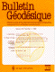

Tables of Contents in Geodesy
Tables of Contents in Geodesy
http://www.geodetic.org/tcg/
Created and maintained by Mike & Mary Craymer
Last revised 26 August 1996
[ Home
| Recent Issues
| Journals List
| Reprints
| Archive Search
| Feedback
]
 Bulletin Geodesique
(Succeeded by Journal of Geodesy)
Publisher
Springer-Verlag, K. Tiks, P.O. Box 31 13 40,
D-10643 Berlin, Germany
Tel. (0) 30/8207-358, Fax (0) 30/8207-448
Email: orders@springer.de
WWW: http://www.springer.de/
or
Springer-Verlag New York Inc., Service Center, 44 Hartz Way,
Secaucus, NJ, 07094, USA
Tel. 201-348-4033, Fax. 201-348-4505
WWW: http://www.springer-ny.com/
[ Home
| Recent Issues
| Journals List
| Reprints
| Archive Search
| Feedback
]
 Copyright © 1995-2001 Michael R. Craymer.
Copyright © 1995-2001 Michael R. Craymer.
All rights reserved.